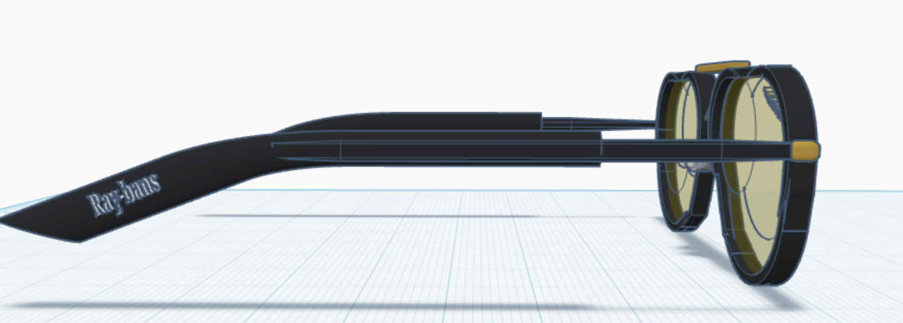

Here are the 7 models I built in Tinkercad. The first 3 was enjoyable, fun, and even exciting to get to. The 4th object, the spoon, was where I began to get frustrated and really challenged my thought process and how frustrating it can be just to get the smallest thing. The following 2 - flask, and the bowler hat - was a good balance of challenge and difficulty that was much rather appreciated. Finally, the aviators is my proudest moment, I actually put a decent amount of time into them. I couldn't figure out a way to make the shapes I used for the lens less visible, Nevertheless, I put attention to detail for this build.